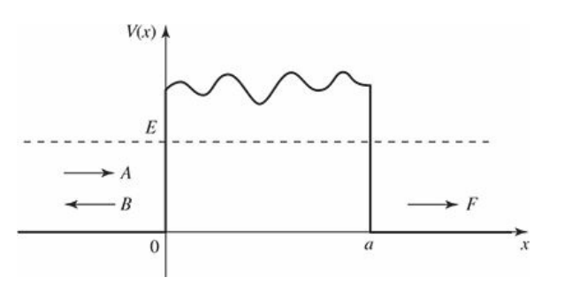
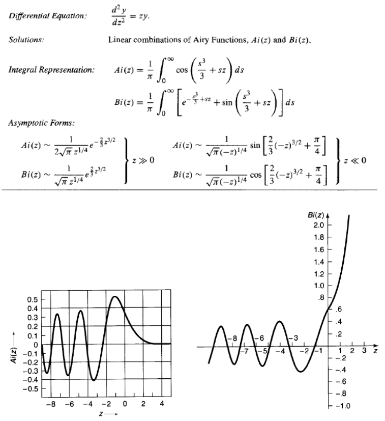

WKB近似
WKB近似
基本思想
WKB近似是解决一维含时薛定谔方程的一种半经典的近似方法。首先考虑经典情况(E>V)，对于V=const的一维含时薛定谔方程，波函数的解总是能写成如下的一般形式：
$$
\psi(x) = Ae^{\pm ikx}, 其中k = \sqrt{2m(E-V)}/ \hbar
$$
这是一个三角函数，e的指数部分的正负代表波函数的方向（向右传播还是向左传播），波长($\lambda=2\pi/k$)与振幅(A)都是定值。
当势能V不是定值，但是相对$\lambda$变化缓慢的时候，对于某一个包含很多波长的区域，可以用三角函数来近似表示波函数，只不过这时候的A和$\lambda$都不再是定值，而是随x改变的变量。
同理，如果E<V ( V=const )，波函数的一般形式为：$\psi(x) = Ae^{\pm \kappa x}, 其中\kappa = \sqrt{2m(V-E)}/ \hbar$，当V不是定值，但相对$1/ \kappa$变化缓慢时，仍然可以写成如上形式，只不过这时候的A和$\kappa$都是关于x的变量。
现在，就只剩一个遗留问题：在转折点处，也就是$E \approx V$时，该如何处理？此时的$\lambda$(or $1/ \kappa$)都会趋于无穷，V也就很难说是随波长变化缓慢了。这时候就应该做一些近似，后续会讲到，这里我们先考虑E>V和E<V情况下的一些应用。
经典区域
求解波函数
薛定谔方程：
$$
-\frac{\hbar^2}{2m} \frac{d^2 \psi}{dx^2} + V(x)\psi = E\psi \tag{1}
$$
改写为以下形式：
$$
\frac{d^2 \psi}{dx^2} = -\frac{p^2}{\hbar^2} \psi, \tag{2}
$$
其中：
$$
p(x) \equiv \sqrt{2m [E - V(x)]} \tag{3}
$$
这里的p(x)就是粒子动量的经典形式，我们假设E>V，那么p(x)就是实数，顾名思义，粒子会被限制在E>V的区域，称为经典区域。考虑到$\psi(x)$是一个复函数，那么总可以表示为以下形式（$A(x)$与$\phi(x)$都是实的）：
$$
\psi(x) = A(x) e^{i\phi(x)}. \tag{4}
$$
计算一下这个函数的一阶导和二阶导：
$$
\frac{d\psi}{dx} = (A’ + iA\phi’) e^{i\phi}, \
\frac{d^2 \psi}{dx^2} = \left[ A’’ + 2iA’\phi’ + iA\phi’’ - A(\phi’)^2 \right] e^{i\phi}. \tag{5}
$$
图 1：经典上，粒子束缚在区域 $E ≥ V(x)$
带入到方程(1)中得到：
$$
A’’ + 2iA’\phi’ + iA\phi’’ - A(\phi’)^2 = -\frac{p^2}{\hbar^2} A. \tag{6}
$$
这是一个复数方程，可以分解为实数部分和虚数部分：
$$
A’’ - A(\phi’)^2 = -\frac{p^2}{\hbar^2} A,
\quad \text{or} \quad
A’’ = A\left[ (\phi’)^2 - \frac{p^2}{\hbar^2} \right], \tag{7}
$$
和
$$
2A’\phi’ + A\phi’’ = 0,
\quad \text{or} \quad
(A^2 \phi’)’ = 0. \tag{8}
$$
方程(7)和(8)都是直接由薛定谔方程求解得到的，并没有做任何近似，后者可以很容易解出来：
$$
A^2 \phi’ = C^2, \quad \text{or} \quad A = \frac{C}{\sqrt{|\phi’|}}, \tag{9}
$$
其中C是常数（实的）。方程(7)不太好解，这里就需要引入近似：假设振幅A变化非常缓慢，那么它的二阶导A’‘就可以忽略（具体来说应该是假设$A’‘/A$远小于$(\phi’)^2$和$p^2/\hbar ^2$），因此式子左端近似为0，可以得到：
$$
(\phi’)^2 = \frac{p^2}{\hbar^2}, \quad \text{or} \quad \frac{d\phi}{dx} = \pm \frac{p}{\hbar},
$$
也就是：
$$
\phi(x) = \pm \frac{1}{\hbar} \int p(x), dx. \tag{10}
$$
将常数项并入C中（比如$\sqrt{\hbar}$），波函数就可以表示为：
$$
\psi(x) \approx \frac{C}{\sqrt{p(x)}}
e^{\pm \frac{i}{\hbar} \int p(x), dx}. \tag{11}
$$
至此波函数就解出来了，与方势阱不同的是前面会有动量开根号控制振幅。另外我们可以注意到：
$$
|\psi(x)|^2 \approx \frac{|C|^2}{p(x)}. \tag{12}
$$
即概率幅与动量成反比，这是符合预期的或者说可以在物理上解释的，因为动量越大代表粒子运动越快，在粒子运动的越快的区域平均来说粒子待的时间越短，找到它的概率当然也会越小。事实上WKB方法的提出也一定程度上受启发于上述这种半经典式思考，而不是在方程中丢掉$A’'$项，后者更数学，前者更直观。
无限深势阱
如下图所示，考虑一个无限深势阱，其中的势能函数未知：
$$
V(x) =
\begin{cases}
\text{some specified function}, & (0 < x < a), \
\infty, & \text{(otherwise)}.
\end{cases} \tag{13}
$$
图 2：崎岖底部的无限方势阱
在势阱内（假设E>V ），我们有波函数：
$$
\psi(x) \approx \frac{1}{\sqrt{p(x)}} \left[ C_{+} e^{i\phi(x)} + C_{-} e^{-i\phi(x)} \right], \tag{14}
$$
或者，写成更方便的三角函数的形式：
$$
\psi(x) \approx \frac{1}{\sqrt{p(x)}} \left[ C_{1} \sin\phi(x) + C_{2} \cos\phi(x) \right], \tag{15}
$$
其中
$$
\phi(x) = \frac{1}{\hbar} \int_{0}^{x} p(x’), dx’, \tag{16}
$$
再带入边界条件：当$x=0$时$\psi(x) = 0$，因此$C_{2} = 0$；当$x=a$时$\psi(x) = 0$，因此：
$$
\phi(a) = n\pi \quad (n = 1, 2, 3, \ldots). \tag{17}
$$
也就是：
$$
\int_{0}^{a} p(x), dx = n\pi\hbar. \tag{18}
$$
(18)便是我们喜闻乐见的量子化条件。我们发现即使做了近似，仍然能够得到准确的量子化条件，还挺神奇的。
隧穿区域
一维势垒隧穿
上一部分中，我们假设E>V，所以p是实的；那么当E<V的时候，参照公式(11)，可以很容易得到如下的波函数形式，只不过p现在是虚数：
$$
\psi(x) \approx \frac{C}{\sqrt{|p(x)|}}
e^{\pm \frac{1}{\hbar} \int |p(x)|, dx}. \tag{19}
$$
现在我们考虑一个简单的一维势垒隧穿问题（假设E小于势垒高度）：

图 3：崎岖顶部方势垒的散射
在势垒的左边（x<0）：
$$
\psi(x) = A e^{ikx} + B e^{-ikx}, \tag{20}
$$
A代表入射波振幅，B代表反射波振幅，而$k \equiv \sqrt{2mE}/ \hbar$. 在势垒的右边，
$$
\psi(x) = F e^{ikx}, \tag{21}
$$
F代表透射波振幅，透射系数T是F与A的模平方的比值，
$$
T = \frac{|F|^2}{|A|^2}. \tag{22}
$$
而在势垒区域，由WKB近似可以给出波函数：
$$
\psi(x) \approx
\frac{C}{\sqrt{|p(x)|}}
e^{\frac{1}{\hbar} \int_0^x |p(x’)|, dx’}
+
\frac{D}{\sqrt{|p(x)|}}
e^{-\frac{1}{\hbar} \int_0^x |p(x’)|, dx’}. \tag{23}
$$
我们假设势垒非常高或者非常宽，那么隧穿概率应该很小，以至于从右边界面反射回来的衰逝波（e指数为正的部分）非常小，可以忽略，也就是C=0. 这样的话透射波与入射波的振幅比例就近似等于指数衰减部分右端的幅值：
$$
\frac{|F|}{|A|} \sim
e^{-\frac{1}{\hbar} \int_0^a |p(x’)|, dx’},
$$
所以透射系数T：
$$
T \approx e^{-2\gamma}, \qquad
\text{with }
\gamma \equiv \frac{1}{\hbar} \int_0^a |p(x)|, dx. \tag{24}
$$
图 4 ：一个又高又宽的势垒散射波函数的数值结构
α衰变（Gamow’s theory of alpha decay）
α衰变指的是重元素，特指那些原子序数大于等于82的那些元素，它们具有放射性，会有一定几率释放出粒子，也就是氦原子核， 包含两个质子和两个中子。一但α粒子离开原子核，由于质子带正电，它会和同样带正电的剩下的原子核库伦排斥；在粒子离开原子核之前，可以认为粒子被束缚在一个很深的势阱里面，这个势阱是由原子核之间的强相互作用造成的。如下图所示，势阱宽度近似为$r_1$（原子核半径），右边是势垒，拐点是$r_2$，把逃逸机理理解为量子隧穿。
图 5： 一个α粒子处于放射核中的 Gamow 模型势.
如果E为α粒子的能量，那么拐点$r_2$可以由下面式子确定：
$$
\frac{1}{4\pi\epsilon_0}\frac{2Ze^2}{r_2} = E. \tag{25}
$$
(24)中的$\gamma$也就可以表示出来：
$$
\gamma = \frac{1}{\hbar} \int_{r_1}^{r_2}
\sqrt{2m!\left(\frac{1}{4\pi\epsilon_0}\frac{2Ze^2}{r} - E\right)},dr
= \frac{\sqrt{2mE}}{\hbar} \int_{r_1}^{r_2} \sqrt{\frac{r_2}{r} - 1}, dr.
$$
为了计算这个积分，我们做一下换元，令$r = r_2sin^2u$，计算后可以得到：
$$
\gamma = \frac{\sqrt{2mE}}{\hbar}
\left[
r_2!\left(\frac{\pi}{2} - \sin^{-1}!\sqrt{\frac{r_1}{r_2}}\right)
- \sqrt{r_1(r_2 - r_1)}
\right]. \tag{26}
$$
一般有，$r_1 \ll r_2$，那么可以利用小角近似（$sin\epsilon \approx \epsilon$）简化上式：
$$
\gamma \cong \frac{\sqrt{2mE}}{\hbar}
\left[\frac{\pi}{2}r_2 - 2\sqrt{r_1 r_2}\right]
= K_1 \frac{Z}{\sqrt{E}} - K_2 \sqrt{Zr_1}, \tag{27}
$$
其中
$$
K_1 \equiv
\left(\frac{e^2}{4\pi\epsilon_0}\right)
\frac{\pi\sqrt{2m}}{\hbar}
= 1.980,\text{MeV}^{1/2}, \tag{28}
$$
$$
K_2 \equiv
\left(\frac{e^2}{4\pi\epsilon_0}\right)^{1/2}
\frac{4\sqrt{m}}{\hbar}
= 1.485,\text{fm}^{-1/2}. \tag{29}
$$
($1fm$（费米）等于$10^{-15} m$，是通常原子核的尺度。)
假设α粒子以平均速度$v$在原子核内运动，与势垒壁碰撞的平均时间为$2r_1/v$，则碰撞概率为$v/2r_1$。每次碰撞的逃逸概率为$e^{-2\gamma}$，那么单位时间内发射概率为$(v/2r_1)e^{-2\gamma}$，因此母核的寿命大概是：
$$
\tau = \frac{2r_1}{v}e^{-2\gamma} \tag{30}
$$
Unfortunately，我们不知道$v$，但是不要紧，因为从一个放射性原子核到另一个原子核，指数因子会在很大范围内（25个数量级）变化，相比之下对$v$的变化就没有那么敏感了。特别地，如果将实验测定的寿命的对数值对$1/ \sqrt{E}$作图，得到的结果是一条非常漂亮的直线（下图），与式(27)(30)所预测的一样：
图 6: 铀和钍的寿命对数与 $1/ \sqrt{E}$ 图像（其中 $E$ 是发射的$α$粒子的能量）
连接区域
连接公式
前面应用WKB近似的情形，针对的都是类似要么能量严格大于势场，要么能量严格小于势场的情形，这里的原因是WKB近似在通常的经典折返点（一次函数二次函数等等）是不成立的，除了势垒隧穿的情形（其实主要结论仍然是成立的，比如Gamow理论）。因为WKB近似需要满足条件：振幅随空间缓慢变化。但是这个条件在经典折返点处是不成立的：
图 7：右转折点的放大图
简单起见，我们移动坐标轴，使右转折点处在 x=0。由 WKB 近似，我们有：
$$
\psi(x) \equiv
\begin{cases}
\dfrac{1}{\sqrt{p(x)}}
\left[
B e^{\dfrac{i}{\hbar}\int_x^{0} p(x’),dx’} +
C e^{-\dfrac{i}{\hbar}\int_x^{0} p(x’),dx’}
\right],
& x < 0 \[1.2em]
\dfrac{1}{\sqrt{|p(x)|}} D
e^{-\dfrac{1}{\hbar}\int_0^{x} |p(x’)|,dx’},
& x > 0
\end{cases} \tag{31}
$$
（假定，当 $x > 0$时，$V(x)$总是大于$E$，在这个区域，我们可以去掉正的指数，因为它随 $x → ∞$ 趋于无限大。）我们的任务就是在边界处把两个解连接起来。但是这里有一个严重困难：在 WKB 近似中，$ψ$ 在转折点（此处 $p(x)→ 0$）趋于无限大。当然，如所预期那样，实际的波函数不会趋于无限大，只是 WKB 近似方法在转折点附近不适用。更准确的说是转折点的边界条件决定了允许能量。我们所需要做的就是要用一个“修补”波函数把两个区域的 WKB 的解连接在一起。
因为我们只需原点邻域的修补波函数$ψ_p$ ，我们将此处的势能近似为线性势。
$$
V(x) \cong E + V’(0)x \tag{32}
$$
然后对这个线性V解薛定谔方程：
$$
-\dfrac{\hbar^2}{2m}\dfrac{d^2 \psi_p}{dx^2}
- \left[ E + V’(0)x \right] \psi_p
= E \psi_p
$$
移项一下：
$$
\dfrac{d^2 \psi_p}{dx^2} = \alpha^3 x \psi_p \tag{33}
$$
其中
$$
\alpha \equiv \left[ \dfrac{2m}{\hbar^2} V’(0) \right]^{1/3} \tag{34}
$$
定义变量变换
$$
z \equiv \alpha x \tag{35}
$$
可以把$α$吸收其中。
这样的话方程变成如下形式：
$$
\dfrac{d^2 \psi_p}{dz^2} = z \psi_p \tag{36}
$$
这是艾里方程，其解为艾里函数。因为艾里方程是一个二阶微分方程，所以有两个线性 独立的艾里函数，$Ai(z)$和 $Bi(z)$ 。

图 8：艾里函数性质与图
A与B在y轴左侧都是振荡，区别在于y轴右侧A是指数衰减B是指数增长。显然修补波函数是$Ai(z)$和 $Bi(z)$的线性组合：
$$
\psi_p(x) = a,\mathrm{Ai}(\alpha x) + b,\mathrm{Bi}(\alpha x) \tag{37}
$$
其中$a$和$b$都是适当的常数。
现在我们要做的就是在修补区与近似区重叠的重叠区匹配两个波函数。
图 9：两个重叠区与修补区
在重叠区(32)式成立，那么利用(34)式的表述，可以得到：
$$
p(x) \equiv \sqrt{2m(E - E - V’(0)x)}
= \hbar \alpha^{3/2} \sqrt{-x} \tag{38}
$$
特别地，在右侧第二个相交区：
$$
\int_0^{x} |p(x’)|,dx’
\equiv \hbar \alpha^{3/2} \int_0^{x} \sqrt{x’},dx’
= \dfrac{2}{3} \hbar (\alpha x)^{3/2}
$$
因此WKB波函数（31式）可以写成：
$$
\psi(x) \simeq
\frac{D}{\sqrt{\hbar},\alpha^{3/4} x^{1/4}}
, e^{-\frac{2}{3}(\alpha x)^{3/2}} \tag{39}
$$
同时，利用艾里函数在$z$很大时候的渐进形式（图7），第二重叠区的波函数（37式）成为：
$$
\psi_p(x) \simeq
\frac{a}{2\sqrt{\pi},(\alpha x)^{1/4}}
e^{-\frac{2}{3}(\alpha x)^{3/2}}
+
\frac{b}{\sqrt{\pi},(\alpha x)^{1/4}}
e^{\frac{2}{3}(\alpha x)^{3/2}} \tag{40}
$$
比较这两个解，可以得到：
$$
a = \sqrt{\frac{4\pi}{\alpha \hbar}}, D ,
\qquad
b = 0 \tag{41}
$$
对第一重叠区重复以上步骤。此时$p(x)$仍由（38）式给出，只不过现在$x$为负，所以：
$$
\int_x^{0} p(x’),dx’ \cong \frac{2}{3}\hbar,(-\alpha x)^{3/2} \tag{42}
$$
WKB波函数（31式）为：
$$
\psi(x) \cong
\frac{1}{\sqrt{\hbar},\alpha^{3/4}(-x)^{1/4}}
\left[
B,e^{\tfrac{i}{3}\tfrac{2}{\hbar}(-\alpha x)^{3/2}}
+
C,e^{-\tfrac{i}{3}\tfrac{2}{\hbar}(-\alpha x)^{3/2}}
\right] \tag{43}
$$
同时，利用艾里函数在负的大$z$时候的渐进式（图7），修补波函数（37式，其中$b=0$）为：
$$
\begin{aligned}
\psi_p(x) &\cong
\frac{a}{\sqrt{\pi},(-\alpha x)^{1/4}}
\sin!\left[
\frac{2}{3}(-\alpha x)^{3/2} + \frac{\pi}{4}
\right] \[0.5em]
&=
\frac{a}{\sqrt{\pi},(-\alpha x)^{1/4}} \cdot
\frac{1}{2i}
\left[
e^{i\pi/4} e^{\tfrac{i2}{3}(-\alpha x)^{3/2}}
e^{-i\pi/4} e^{-\tfrac{i2}{3}(-\alpha x)^{3/2}}
\right]
\end{aligned} \tag{44}
$$
对比两个函数可以得到：
$$
\frac{a}{2i\sqrt{\pi}} e^{i\pi/4}
= \frac{B}{\sqrt{\hbar\alpha}},
\qquad
\frac{-a}{2i\sqrt{\pi}} e^{-i\pi/4}
= \frac{C}{\sqrt{\hbar\alpha}}
$$
将（41）中的$a$带入得到：
$$
B = -i e^{i\pi/4} D,
\qquad
C = i e^{-i\pi/4} D \tag{45}
$$
这就是所谓的连接公式，它们连接转折点两边的 WKB 解。我们现在可以摆脱修补波函数了，引入它的唯一的目的是连接转折点两边的 WKB 解。以归一化常数 D 表示所有的常数，并将转折点从原点移动至任意点$x_2$，则 WKB 波函数变为：
$$
\psi(x) \cong
\begin{cases}
\dfrac{2D}{\sqrt{p(x)}}
\sin!\left[
\dfrac{1}{\hbar}!\int_x^{x_2}! p(x’),dx’ + \dfrac{\pi}{4}
\right],
& x < x_2 \[1.2em]
\dfrac{D}{\sqrt{|p(x)|}}
\exp!\left[
-\dfrac{1}{\hbar}!\int_{x_2}^{x}! |p(x’)|,dx’
\right],
& x > x_2
\end{cases} \tag{46}
$$
一维简谐振子的束缚态能级
前面算的是转折点向上倾斜，当转折点向下倾斜时，因为仍然是E<V的隧穿区域对应艾里函数的正的大z近似，E>V的经典区域对应艾里函数的负的大z近似，所以得到的波函数应该是一样的：
$$
\psi(x) \cong
\begin{cases}
\dfrac{D’}{\sqrt{|p(x)|}}
\exp!\left[
-\dfrac{1}{\hbar}!\int_{x}^{x_1}!|p(x’)|,dx’
\right], & x < x_1 \[1.2em]
\dfrac{2D’}{\sqrt{p(x)}}
\sin!\left[
\dfrac{1}{\hbar}!\int_{x_1}^{x}!p(x’),dx’ + \dfrac{\pi}{4}
\right], & x > x_1
\end{cases} \tag{47}
$$
特别的，如果我们只讨论势阱（图9c），内部区域($x_1<x<x_2$)的波函数可以写成：
$$
\psi(x) \simeq
\dfrac{2D}{\sqrt{p(x)}} \sin \theta_2(x),
\quad
\text{其中}\quad
\theta_2(x) \equiv \dfrac{1}{\hbar}!\int_{x}^{x_2}!p(x’),dx’ + \dfrac{\pi}{4}
$$
由（46）式。或者
$$
\psi(x) \simeq
\dfrac{-2D’}{\sqrt{p(x)}} \sin \theta_1(x),
\quad
\text{其中}\quad
\theta_1(x) \equiv -\dfrac{1}{\hbar}!\int_{x_1}^{x}!p(x’),dx’ - \dfrac{\pi}{4}
$$
由（47）式。显然，两个正弦函数的变量只能相差 $\pi$ 的整数倍：$\theta_2 = \theta_1 + n\pi$，由此得到：
$$
\int_{x_1}^{x_2} p(x),dx =
\left( n - \dfrac{1}{2} \right)\pi\hbar,
\quad n=1,2,3,\dots \tag{48}
$$
图 10：在转折点处的向上和向下倾斜
这个量子化条件决定了“典型的”有两个倾斜边的势阱的允许能量。注意到它与两边垂直的势阱（18式）和一边垂直的势阱(此处不计算)的不同仅在于从 n 减去数的不同（$0$，$1/4$，或 $1/2$）。由于 WKB 近似在半经典(大 $n$ 时)领域最为适用，所以这种区别仅是表观的而不是 实质的。在很多情况下，这个结果非常有用，因为它可以使我们在不求解 $Schrödinger$ 方程的情况下，简单地求一个积分就可计算(估算)出允许能量。而不用考虑波函数本身。